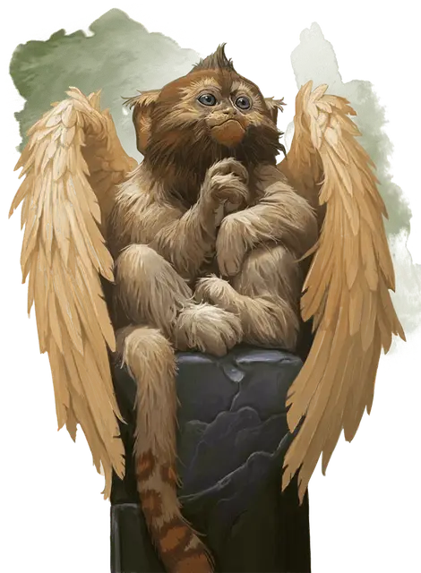

Летающая обезьяна
Flying Monkey
Маленький Зверь, без мировоззрения

Класс Доспеха 12
Хиты 3 (1к6)
Скорость 20 футов, летая 30 футов, лазая 20 футов
| мод | спас | ||
|---|---|---|---|
| СИЛ | 8 | −1 | −1 |
| ЛОВ | 14 | +2 | +2 |
| ТЕЛ | 11 | +0 | +0 |
| мод | спас | ||
|---|---|---|---|
| ИНТ | 5 | −3 | −3 |
| МДР | 12 | +1 | +1 |
| ХАР | 6 | −2 | −2 |
Чувства пассивное Восприятие 11
Опасность 0
Бонус мастерства +2
Особенности
Тактика стаи. Летающая обезьяна совершает с преимуществом броски атаки по существу, если в пределах 5 футов от этого существа находится как минимум один дееспособный союзник
Действия
Укус. . Рукопашная атака оружием: +1 к попаданию, досягаемость 5 футов, одна цель. Попадание: 1 (1к4 – 1) колющего урона.
Описание
Летающие обезьяны немного более умны и любопытны, чем обычные обезьяны, и их можно одомашнить и научить соблюдать простые команды. Они бывают разных цветов и разновидностей, с пернатыми крыльями, длина которых составляет около 5 футов. С разрешения Мастера, при помощи заклинания поиск фамильяра [find familiar] можно вызвать летающую обезьяну.